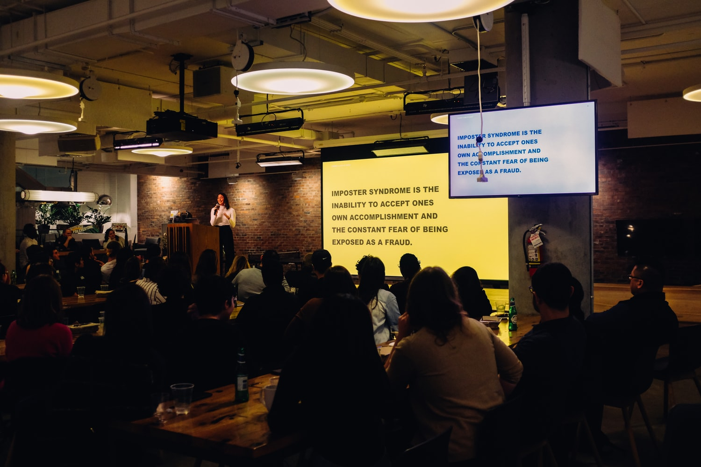
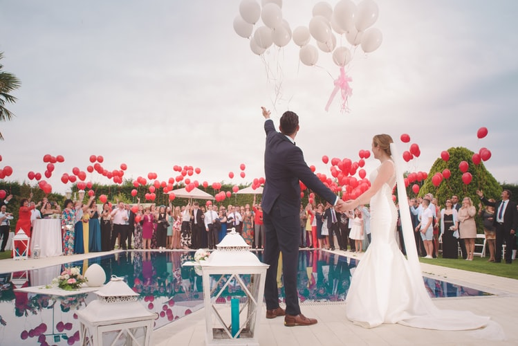

Restaurant
An ideal setting for dining, a delight for the taste buds, an escape from everyday monotony, a welcoming place for events filled with strong emotions – that’s how we could briefly describe the Arcon restaurant.
The chic restaurant, decorated in a contemporary eclectic-industrial style, is complemented by the beauty of the charming landscapes near Lake.
Our Menus

Take a seat, admire the view and let it load you with positive energy; allow yourself a relaxing break. We are committed to serve you only freshly prepared dishes and carefully placed food in the plate.

The Experience
Arcon means complete services that has two important aspects in its center: the impeccable quality and service of those who choose us as partners in organizing events.
Restaurant
The delicious dishes of our restaurant are some of the reasons that make us a top choice.
Top Events
Attention to details and the chic location recommends us as a good event planner.

Lake View
Regardless of the season, lake offers to our guests the perfect setting for relaxation and recreation.
Events
Arcon is often the host of special events where fun and relaxation are the most precious things. In addition to this, the idyllic scenery and delicious dishes are ideal for those who yearn for a place far from the city’s turmoil.
Corporate events
Team spirit, cooperation and communication are some of the values we strongly believe in. Thus, Arcon is the ideal place for corporate events such as team buildings, team events or office parties.
READ MOREPersonal events
Arcon is the place to meet with all your loved ones. Whether it’s an anniversary, a wedding party or baptism, at Arcon we welcome you with the perfect atmosphere of the event.
READ MORE